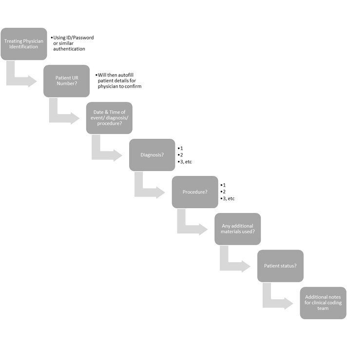

Public hospitals in Queensland and other Australian states receive funding from Medicare and other government bodies on a per-patient-per-procedure basis (QLD Health 2018). For funding to be allocated correctly to each hospital, the procedures undertaken on a per-patient basis must be recorded and remitted to Medicare or the relevant funding body in a timely fashion. The current procedure for recording and remitting this information, called clinical coding, is extremely manual and time-consuming. This task involves an administrative worker reviewing patient charts and practitioner/nurse notes to determine what the medical condition was, which procedures were performed, and what materials were used in the process. Each condition and procedure is then assigned a code based on the Australian clinical coding standard ICD-10-AM; for example, P59.9 Jaundice in newborn (IHPA 2019). At times critical information such as the condition or procedure can be up to interpretation, due to complexity or inability to decipher clinician handwriting.
Where small hospitals may be able to keep up with procedures using this manual method, large hospitals require a clinical coding team to process the many procedures performed daily. This project proposes an automated system for clinical coding, whereby clinicians enter procedure details directly into a patient’s electronic chart (where in practice by the hospital) or into a stand-alone application, either of which will automatically code said procedure and produce a summary of codes ready for remittal to Medicare. This system will reduce time spent reviewing patient charts and prevent miscoding due misinterpreted practitioner notes.
As many hospitals still utilise paper-based patient charts, this project will focus on the implementation of a stand-alone application designed to run on a tablet computer, supplementary to the paper charts. To achieve this, an iOS or Android application (app) will be developed for use on whichever mobile devices are employed by each Hospital and Health District (HHD), which will query clinicians for the following information, at minimum, as required by relevant data collection standards (QLD Health 2019):
This app will be lightweight with a minimalistic User Interface (UI) to allow fast identification of data required, and practitioners will be queried for data in a stepwise fashion:
(Click image to view a larger version)
The practitioner will be required to submit the data, after which point data entry will close and the system will return to the initial ‘treating physician identification’ query. The app will organise this data per field, initially identifying the patient from hospital records and assigning patient details, practitioner name, and date/time to a temporary working file on the device. Key words and phrases from the diagnosis, procedure and additional materials fields will then be compared to a built-in table of ICD-10-AM codes. Where matching codes are found, these will be added to the working file. The file will be summarised with the patient status. Additional notes will be transcribed directly to the end of the file, alongside a direct copy of the practitioner notes for the diagnosis, procedure and materials fields, which will be included for verification and audit purposes, with any unresolved words or phrases highlighted for review by the clinical coding team.
A possible example of the data generated can be found hereThis data will then be remitted to an internally hosted clinical coding database via the hospital’s wireless LAN, for review by the clinical coding team.
The query fields will be configurable by each hospital’s Information Technology department based on the requirements of their HHD. The location of a locally-hosted storage database will also be assigned during initial configuration.
As with all new products and procedures, beta testing of an initial prototype will be required prior to development of the final model to identify any obstacles to implementation. Personal experience has identified a general distaste towards technology in many practicing physicians, and this obstacle has already been considered: if beta testing resolves that uptake and use by clinicians is unsatisfactory, this program could be used by clinical coders instead, to transcribe practitioner notes directly into the program, which will assign relevant codes. This ensures efficiencies can still be found with the use of this program regardless of end-user, as clinical coders would not be required to remember or look up ICD-10-AM codes unless they cannot be resolved by the program.
The app must adhere to relevant hospital, state and federal privacy policies, which will require further investigation. At a minimum, this app will not require internet access and will transmit data only via the hospital’s intranet to a locally hosted database. Databases currently in use for storing manually coded data must also be investigated to ensure this app produces compatible data and is able to write to these databases.
This project will require app development software and skills in application programming and mobile app development. There are many app development tools available, such as the free and open-source MIT App Inventor, or paid cloud-based applications such as Shoutem and GoodBarber. Further research is required into the features and limitations of each tool to discern which is most appropriate for this project. For example, MIT App Inventor is yet to release support for iOS apps (Patton 2019), and at this stage confirmation of the mobile platform in use by each HHD has not been obtained. As most app development tools include mobile device emulators, physical hardware is not required for this project. Beta testing would require an Android or iOS device, however as this app would not require specialised hardware, sourcing mobile devices for beta testing is not anticipated to be difficult.
While the above app development tools boast no requirement for related skills, a basic understanding of databases, app development and mobile app programming would be beneficial in production of the app, and aid debugging. These basic skills can be acquired through a multitude of online tutorials and reference materials, and verbosely through RMIT’s Bachelor of Information Technology, with courses such as Database Applications, Mobile Application Development and iPhone Software Engineering.
If successfully integrated into a hospital environment, this project will increase the efficiency of clinical coding by reducing time spent reviewing patient charts and preventing miscoding. This may result in timelier remittal of funding and a reduction in staffing requirements for larger hospitals, however large cost savings from complete workforce reduction would not be possible with this project as manual verification of data is currently required. Although ideally implemented at point-of-care for use by practitioners, efficiencies in data entry could still be seen if this app is used by clinical coding staff, who would not be required to remember or look up ICD-10-AM codes unless they cannot be resolved by the program.